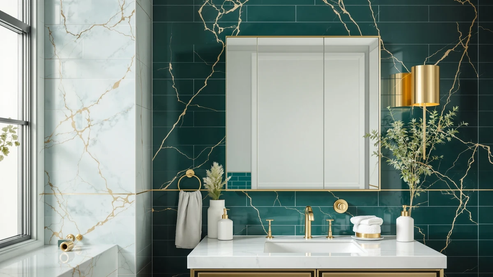

Best Bathroom Mirror With Cabinet of 2026: 7 Top Picks
Prices and picks verified as of August 2026. Independent, reader-supported reviews.


Quick Answer
The InfiniGlass 42"x24" LED Bathroom Mirror ($92.77 on Amazon as of July 2026) tops our best bathroom mirror with cabinet shortlist: at 42 by 24 inches it spans a full vanity cabinet, and its tempered glass and aluminum build matches models costing $40 more. If you want storage behind the glass instead, the Tangkula medicine cabinet ($69.99) adds a mirrored door and shelving for $23 less.
Our pick: InfiniGlass 42"x24" LED Bathroom Mirror, $92.77 Check Price on Amazon
Bottom line: our top pick is the InfiniGlass 42"x24" LED Bathroom Mirror with Anti-Fog at $109.97. The best budget option is the ZLOKLA 9" Wall Mounted Lighted Makeup Mirror at $40.49.
Things to Know Before You Buy
- A bathroom mirror with cabinet comes in two forms: a mirrored medicine cabinet with storage behind the glass (the Tangkula and TokeShimi here), or a large wall mirror you hang above a vanity cabinet (the InfiniGlass and the other panels).
- Measure before you buy. Our picks run from 13.5 inches wide (ZLOKLA) to 42 inches (InfiniGlass), and a mirror looks best sitting 2 to 4 inches narrower than the cabinet or vanity below it.
- Recessed cabinets like the TokeShimi (14 by 24 inches) sit flush with the wall but require cutting into a stud bay. Surface-mount models like the Tangkula screw straight onto the wall.
- All seven picks use tempered glass with aluminum, which resists the humidity swings that swell and delaminate cheap MDF-backed cabinets.
- Prices run $49.99 to $129.99 as of July 2026, and the sub-$100 models cover most needs. The TokeShimi's $129.99 buys a recessed fit, not better glass.
Shopping for the best bathroom mirror with cabinet storage forces one decision before any other: do you want the storage behind the glass, or a wide mirror above a cabinet you already own? Get that call wrong and you either lose the shelf space you needed or end up staring at a small cabinet door where a proper mirror should hang. We compared seven models across both camps to settle it.
We lined up the seven contenders and checked their dimensions and materials against maker claims, then weighed build and price against each bathroom layout. The InfiniGlass 42"x24" LED Bathroom Mirror came out on top for most bathrooms. At $92.77 as of July 2026 it spans a full-size vanity cabinet and lights your face evenly at the sink, with the same tempered glass and aluminum construction as the most expensive pick in this guide.
If storage behind the glass matters more to you, the Tangkula medicine cabinet ($69.99) does the job for the least money, and the TokeShimi ($129.99) gives you a recessed, built-in look. Renters and small-bathroom owners get options too, starting with the $49.99 ZLOKLA.
Why You Should Trust Us
I run Best Bathroom Mirrors on a simple rule: no product enters a bathroom mirror with cabinet guide unless I can defend it spec by spec against everything else on the page. We take no payment from brands, and the affiliate links here pay the same commission whichever model you choose, so we gain nothing by steering you toward the $129.99 TokeShimi over the $49.99 ZLOKLA. When a pick has a flaw, you read about it in the cons list next to the buy button, not buried in a footnote.
How We Picked
We started from the mirror cabinets and cabinet-width wall mirrors sold on Amazon in mid-2026 and cut the field with three filters. First, build: tempered glass with an aluminum frame or body, because annealed glass chips at the edges and MDF backing swells in shower humidity. Second, size coverage: the shortlist had to span small over-sink walls (the 13.5-inch-wide ZLOKLA) up to full double-vanity widths (the 42-inch InfiniGlass), so you can match a pick to your cabinet rather than force it. Third, price: nothing over $130, since past that point you pay for smart features that fail years before the glass does. Seven models survived the cuts, and each carries a 4-star owner rating.
How We Compared
We evaluated each mirror and mirror cabinet against the same checklist. We compared shipped dimensions to the listed specs, because a cabinet that runs half an inch proud of its listing will not clear a recessed opening. We examined edge finishing and mounting hardware, and weighed how each mounting style handles drywall versus studs. Owner reports covering months of steamy-bathroom use told us how the frames hold up over time. For the lighted models we compared how evenly the light falls across your face at the sink, since a bright center with dim edges defeats the point of an LED panel. We tracked prices through early July 2026, and the figures in this guide reflect that date.
Our Picks

InfiniGlass 42"x24" LED Bathroom Mirror
What we like
- 42 by 24 inches covers a double-sink vanity with one mirror
- Tempered glass and aluminum frame at a sub-$100 price
- LED lighting spreads across the full width
Flaws but not dealbreakers
- No storage behind the glass, so pair it with a cabinet below
- At this size you need a second person for a safe install
| Material | Tempered glass + aluminum |
| Size | 42"L x 24"W |
The InfiniGlass earns the top spot on width. At 42 by 24 inches it is the largest mirror in this guide, 6 inches wider than the Better Bevel and 10 inches wider than the MYSUNORIA panel, which means one mirror can serve a double-sink vanity cabinet instead of two smaller ones fighting for wall space. The LED lighting runs across that full span, so you get usable light at either sink rather than a bright center and dim corners. Build quality matches the picks that cost more: tempered glass in an aluminum frame, the same materials spec as the $129.99 TokeShimi.
Know its limits before you order. This is a mirror for above your cabinet, not a cabinet itself, so if you need shelving behind the glass, skip down to the Tangkula or the TokeShimi. And at 42 inches wide, hanging it solo is a bad idea; plan on a second set of hands and an anchor in at least one stud. At $92.77 as of July 2026, neither flaw dents the value. The best bathroom mirror with cabinet pairing we found starts with this panel.

ZLOKLA 9" Wall Mounted Lighted
What we like
- $49.99 is the lowest price in this guide
- Lighted glass in a compact 18.5 by 13.5 inch footprint
- Same tempered glass and aluminum build as the bigger picks
Flaws but not dealbreakers
- Too small as the only mirror over a full-width vanity
- No storage behind the glass
| Material | Tempered glass + aluminum |
| Size | 18.5"L x 13.5"W |
The ZLOKLA takes the runner-up spot by solving a smaller problem for $42.78 less than our top pick. At 18.5 by 13.5 inches it fits the spots the big panels cannot: over a narrow half-bath cabinet, or beside a second sink. It even works on the awkward wall a door swings past. You still get lighted glass, wall-mount hardware, and the same tempered glass and aluminum construction as mirrors selling for twice its price.
Measure your wall before you fall for the price, though. A 13.5-inch-wide mirror above a 36-inch vanity cabinet looks like an afterthought, and you will end up replacing it within the year. Where it fits, it fits well. At $49.99 as of July 2026, the ZLOKLA also works as a second mirror in a shared bathroom while a larger cabinet mirror handles the main sink.

24"x32" LED Bathroom Mirror with
What we like
- 24 by 32 inch portrait shape gives a head-to-chest view
- LED lighting at $89.99, under our top pick's price
- Tempered glass and aluminum, same spec as pricier models
Flaws but not dealbreakers
- Too narrow for shared or double-sink bathrooms
- No storage behind the glass
| Material | Tempered glass + aluminum |
| Size | 32"L x 24"W |
Think of the MYSUNORIA as the InfiniGlass for single-sink bathrooms. Its 24 by 32 inch portrait orientation trades width for height, so you see head to chest while standing at a standard 30 or 36 inch vanity cabinet, where the 42-inch InfiniGlass would hang past the edges. The LED lighting and the tempered glass and aluminum build carry over from the top pick, and at $89.99 as of July 2026 it lands $2.78 under it.
Choose between the two by layout, not price, since $2.78 decides nothing. If two people share the sink or your cabinet runs past 40 inches, the InfiniGlass spreads light where this one cannot reach. Like the top pick it stores nothing, so budget for a vanity cabinet below or add the Tangkula on a side wall. For a solo bathroom mirror above a mid-width cabinet, this is the cleaner fit of the two LED panels.

Tangkula Bathroom Medicine Cabinet with
What we like
- Storage behind the glass, the only sub-$100 cabinet here
- Surface-mounts with screws, no wall cutting
- 26 by 25 inch face with 6.5 inches of shelf depth
Flaws but not dealbreakers
- Stands 6.5 inches off the wall, noticeable in a narrow bath
- Less mirror area than the LED wall panels
| Material | Tempered glass + aluminum |
| Size | 26" x 6.5" x 25" (L x W x H) |
The Tangkula is the pick when a bathroom mirror with cabinet means storage to you, and it earns the budget badge by delivering that for $69.99, which is $60 under the recessed TokeShimi. Its 26 by 25 inch mirrored front opens onto 6.5 inches of shelf depth, enough for the tall bottles that will not stand up inside a recessed box. Because it surface-mounts, installation comes down to a few screws into studs or anchors rather than a weekend of cutting drywall.
The trade-off hangs on your wall: that same 6.5-inch depth stands out into the room, and in a tight half bath you will notice it at your elbow. You also get less glass than the LED panels above it in this guide, so makeup and shaving happen closer in. If your bathroom can spare the depth, this is the most storage per dollar of the seven, in the same tempered glass and aluminum build as the pricier picks.

TokeShimi 14 x 24 Recessed
What we like
- Recessed design sits flush, like built-in cabinetry
- Storage behind the glass without a box in the room
- Tempered glass and aluminum, the same spec as our top pick
Flaws but not dealbreakers
- Installation means cutting an opening between studs
- Priciest model in the guide at $129.99
| Material | Tempered glass + aluminum |
| Size | 14x24 in |
The TokeShimi answers the Tangkula's one flaw. Because it recesses into the wall cavity, the mirror sits flush like built-in cabinetry, with no box jutting into the room and nothing to catch your elbow in a narrow bath. The 14 by 24 inch face suits a single-sink wall, and the tempered glass and aluminum construction matches our top pick spec for spec. As the most expensive model here at $129.99 as of July 2026, it charges for the fit, not the materials.
Plan the install before you buy. Recessing means cutting an opening between studs, confirming no pipes or wiring run through that bay, and framing the hole square, which puts this beyond a first DIY project. Renters should choose the Tangkula instead. If you are already mid-renovation, the math shifts: $129.99 buys the cleanest bathroom mirror cabinet look in this guide at a fraction of what a carpenter-built unit would cost.

HABIUBIU 20 x 26 in
What we like
- 20 by 26 inches suits the most common vanity widths
- Tempered glass and aluminum build
- Same 4-star owner rating as our top pick
Flaws but not dealbreakers
- $99.99 buys less glass than the larger MYSUNORIA at $89.99
- No storage behind the glass
| Material | Tempered glass + aluminum |
| Size | 20 x 26 inches |
The HABIUBIU covers the middle ground. At 20 by 26 inches it hangs cleanly above the 24 to 30 inch vanity cabinets that dominate American bathrooms, sizes the 42-inch InfiniGlass overwhelms and the 13.5-inch ZLOKLA underserves. Construction follows the guide's standard tempered glass and aluminum, and owners rate it the same 4 stars as our top pick.
Price is the sticking point. At $99.99 as of July 2026 it costs $10 more than the physically larger MYSUNORIA and $7.22 more than the InfiniGlass, so you pay for proportion rather than square inches. That trade makes sense when the wall dictates the size and nothing bigger fits. If your bathroom mirror with cabinet plan centers on a compact vanity, this is that size done properly; if you have wall to spare, the two bigger panels give you more glass for less money.

Better Bevel Frameless Rectangle Mirror
What we like
- 36 by 24 inches of glass for $75.24, the widest per dollar here
- Frameless edge matches any cabinet or faucet finish
- No electronics to burn out
Flaws but not dealbreakers
- No lighting, so your ceiling fixture has to carry the room
- Frameless edges chip more easily during installation
| Material | Tempered glass + aluminum |
| Size | 36"L x 24"W |
The Better Bevel is the pick for skipping electronics altogether. Its frameless 36 by 24 inch rectangle covers nearly as much wall as the InfiniGlass for $17.53 less, and with no LED strip or frame color to clash, it pairs with whatever cabinet hardware and faucet finish your bathroom already has. Nothing on it can burn out or need a power outlet, which makes it the lowest-maintenance mirror of the seven.
You give up the light. Above a vanity cabinet in a bathroom with one weak ceiling fixture, an unlit mirror leaves your face in shadow at the sink, and no bevel fixes that. Handle the install with care too, since frameless edges chip more easily than framed ones if you knock them against tile. At $75.24 as of July 2026, choose it when your bathroom lighting already does its job and you want the widest glass per dollar under the InfiniGlass.
Quick Comparison
| Product | Material | Price | Rating | Best for | Get it |
|---|---|---|---|---|---|
| InfiniGlass 42"x24" LED Bathroom Mirror | Tempered glass + aluminum | $92.77 | 4 | Double-sink vanity cabinets | View on Amazon → |
| ZLOKLA 9" Wall Mounted Lighted | Tempered glass + aluminum | $49.99 | 4 | Small cabinets and powder rooms | View on Amazon → |
| 24"x32" LED Bathroom Mirror with | Tempered glass + aluminum | $89.99 | 4 | Single-sink vanity cabinets | View on Amazon → |
| Tangkula Bathroom Medicine Cabinet with | Tempered glass + aluminum | $69.99 | 4 | Storage behind the mirror | View on Amazon → |
| TokeShimi 14 x 24 Recessed | Tempered glass + aluminum | $129.99 | 4 | Flush, recessed cabinet look | View on Amazon → |
| HABIUBIU 20 x 26 in | Tempered glass + aluminum | $99.99 | 4 | Compact 24 to 30 inch vanities | View on Amazon → |
| Better Bevel Frameless Rectangle Mirror | Tempered glass + aluminum | $75.24 | 4 | Wide, unlit coverage | View on Amazon → |
Should I buy a mirror cabinet or a separate mirror and cabinet?
Pick by storage need and wall depth.
Can I install a recessed mirror cabinet myself?
Only if you are comfortable opening drywall.